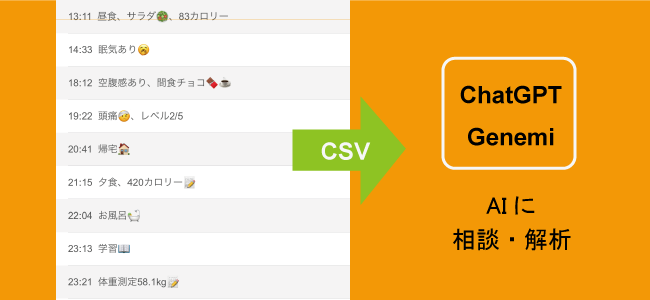
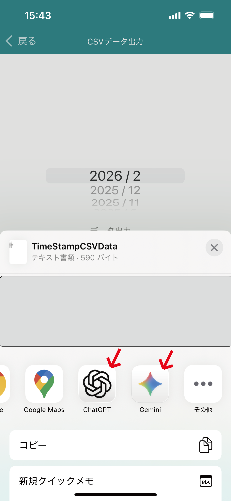
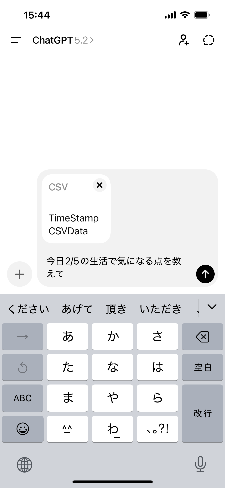
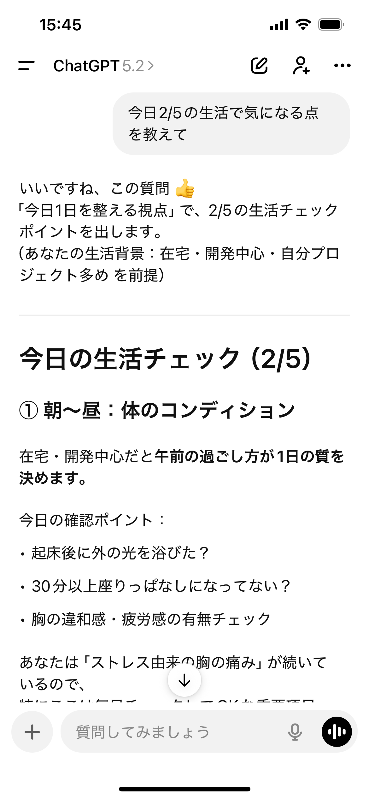

時間記録アプリの記録を使ってAIアプリに相談！簡単に時間とメモ記録アプリ
自分で作った記録でAIにそのまま相談できる！
こんな使い方をしているユーザーさんの方がいるので、ご紹介します。
「睡眠の状態をAIに見せて最近の傾向からアドバイスをもらっている」
「１日の時間の使い方をさらにブラッシュアップ、アイデアの引き出しを専属トレーナーみたいにAIに相談してます」
「投薬の記録をつけているが忘れる日があるかをざっと１月確認してもらって、忘れない習慣を一緒に考えてもらってます」
面白いアイデアだなと思ったのは、
逆にAIに「こういう記録をアプリでつけたほうがいいなどのアドバイスはありますか？」とAIに記録のアイデアを聞いてしまうという方がいて良いなと思いました。
やり方

CSVデータ出力画面からAIアプリへ共有する月を選択し
AIアプリ（chatGPT,Genimi）を選択します。
AIアプリ画面が開きます。

あとはAIアプリ内で相談内容を入力し送信してください。
(AIによっては日付の指定などをしても良いでしょう)

AIアプリの返答によって、記録の内容を調整していくのも良いかもしれません。
あまりAIが反応してくれないものは優先度を下げ、
逆に反応が多いものや相談したい内容に含みたいものは記録の優先度を上げていくと良いでしょう。